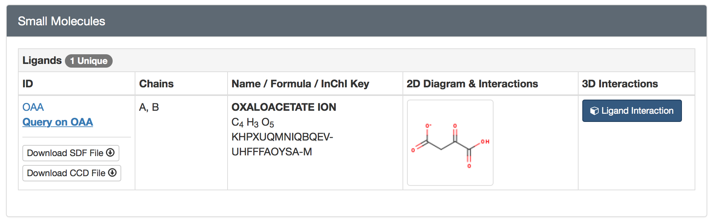
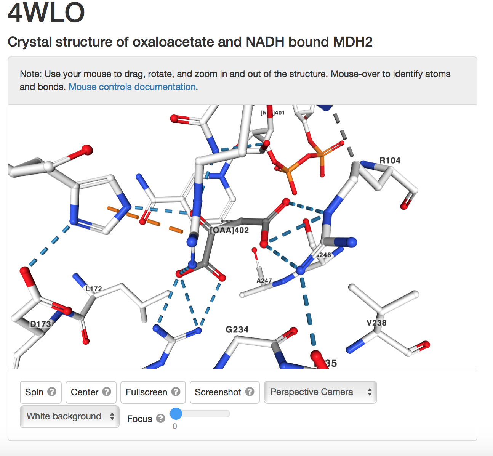
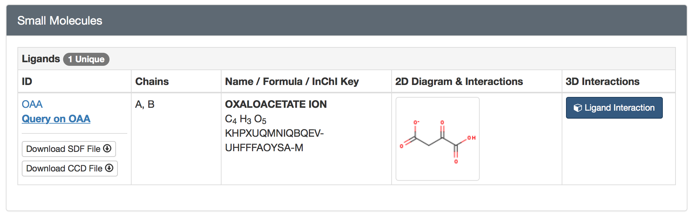
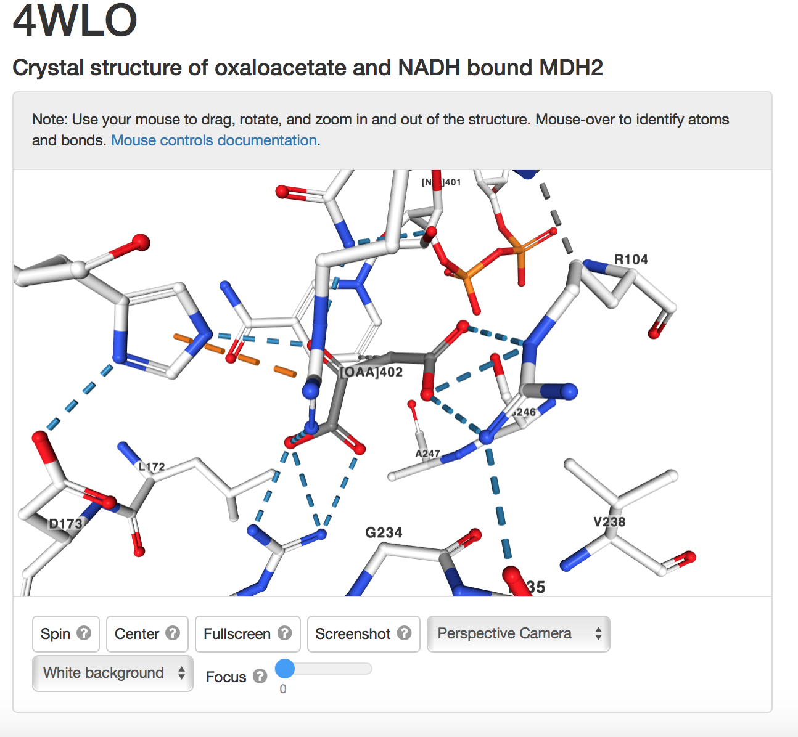

4WLO Ligand information

b) in the viewer identify the amino acids bound to the ligand


Step Four: Identify Important Amino Acids

4WLO Ligand information
b) in the viewer identify the amino acids bound to the ligand
